从武汉撤离的外国人 | 疫情之下004
原文链接 备份链接 以下文章来源于世风 ，作者吕晓宇 【疫情之下】是苍衣社开设的非虚构故事专栏，记录在新型冠状病毒疫情蔓延时，普通中国人的抗疫报告。 大家好，我是脸叔。 随着新冠肺炎的爆发，湖北地区的居民工作和生活都受到很大的影响。 …

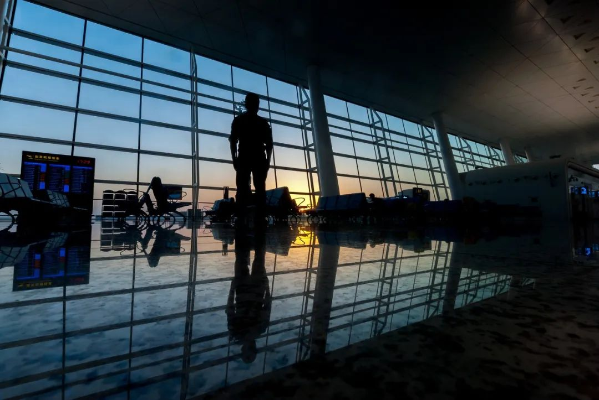
武汉封城后，美国、日本、澳大利亚等国，
纷纷派机撤侨。
谁走、谁留？
困扰着武汉的国际家庭。
不少家庭选择让一方带着孩子离开，
也有不少选择全家留下。
一名常住武汉的法籍医生说，
“疫情期间，我在武汉能做的比在法国多。”
而另一位日籍教授的回应，在网上广为流传：
“我的研究室里还有中国学生，
我无法抛下我的同事和学生逃回日本。”
不论是离开还是留下的人，
都在脆弱与温情中坚持着。
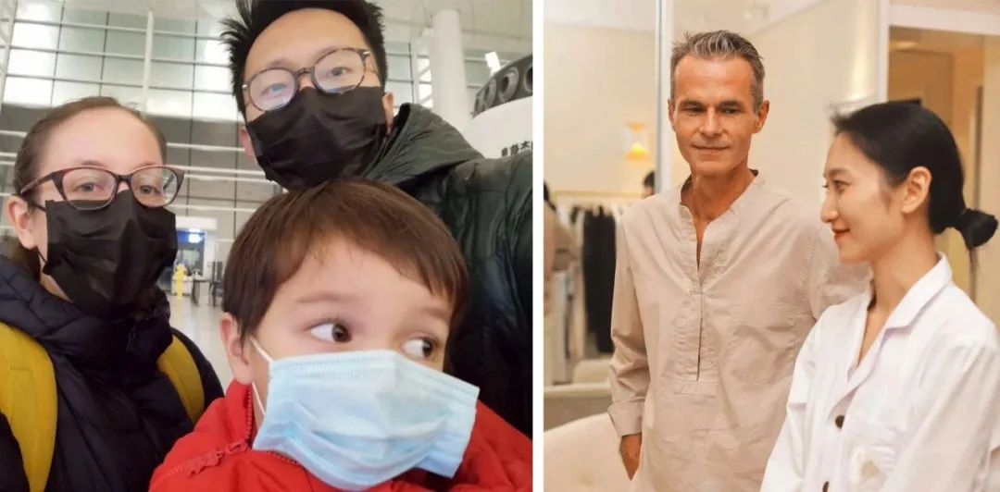
武汉国际家庭 左：晓宇一家 右：Fred和妻子
一条和两个做出不同选择的武汉国际家庭，
进行了一次深谈。
在武汉的外国人面对哪些独特困境？
撤侨到底需经历哪些过程，存在哪些问题？
那一个个武汉国际家庭，
现在怎么样了？
***************自述 ********** 晓宇 Fred***************
***************编辑************ 叶荔 *********************************潇钺
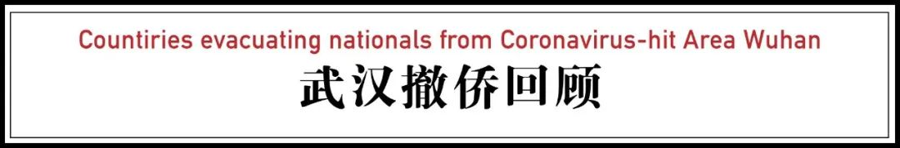
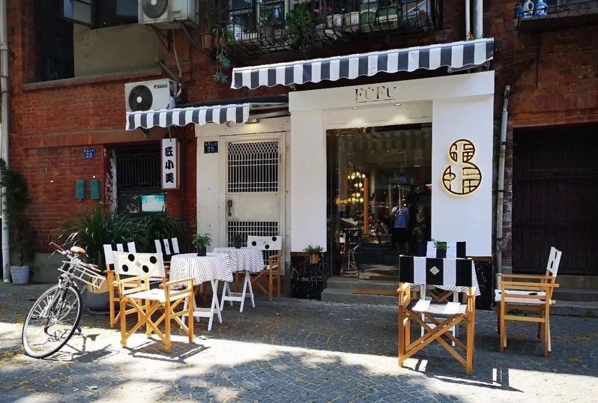
Fred的店开在黎黄陂路上，在武汉小有名气
1月23日，武汉封城当天，回爸妈家过春节的晓宇，让英德双国籍的妻子安娜，联系大使馆问问情况。
同时另一边在黎黄陂路上，在武汉生活了10年的法国人Fred，已提前把自己的3家小店打烊，并打电话给中国岳父母解释：“今年的年夜饭不能在一起吃了，你们老人家也不要出门乱跑。”
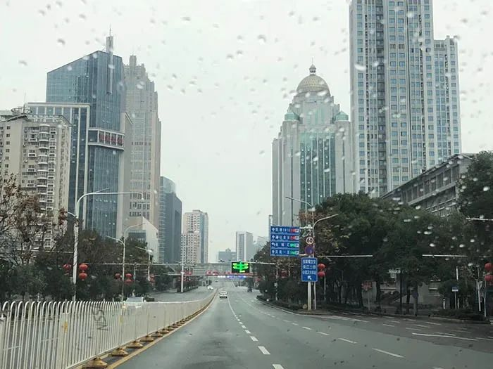
一位回武汉探亲的澳洲华人摄于去武汉天河机场的路上
在湖北，外国籍常住人口有1.8万，80%集中在武汉。
都说每一个数字背后，是一个鲜活的人；而每一个人背后，可能牵动着一整个家庭。
1月23日武汉封城后，往返武汉与世界各地的航班停飞。疫情风暴中的外国人面临和当地人一样的日常难题：失去公共交通后，购买物资变得很难；儿童和老人需要更多的照顾；本身就有疾病的人无法去医院；有的人本打算春节假期完了就回去工作。此外，他们很可能还多一个问题：中文不够好，不能第一时间获取并理解疫情信息。
于是，许多人开始向大使馆求助。

综合各媒体报道，截至2月22日各国撤侨人数统计
撤侨面前，离开和留下都是一种选择，这种选择不仅关乎个人。一旦去留涉及到一个家庭，问题就更为复杂。
晓宇和他的跨国家庭，匆乱之中、压力之下，选择让妻子带着孩子离开；而Fred和妻子，思前想后，决定一家人一起留下。
我们与这两个做出不同选择的家庭，进行了一次深谈。他们的诸多经历，也映射了武汉乃至湖北的整个外国人和国际家庭群体，在这次疫情中的困境与应对。
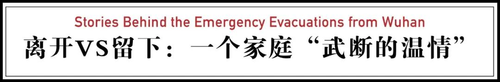
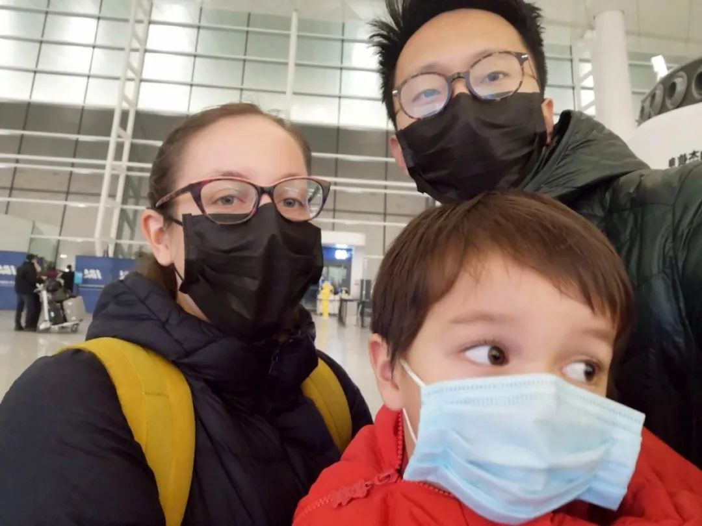
讲述者
晓宇
家庭成员
妻子安娜（英德双国籍）儿子3岁
父母、姥姥都是武汉人
现状
妻子带着孩子离开
自己与父母、姥姥在武汉自我隔离
刚逃离澳洲大火，
又陷入武汉疫情
我和夫人安娜，从2014年起在牛津居住。我攻读牛津大学政治学的博士学位，安娜在大学工作，研究东亚传统音乐，她是英德的双国籍。半年前，我们从英国搬到澳洲。
回武汉是春节过年回家，但比计划得早，我们一月初回来了，逃离澳洲大火。
1月23日武汉的对外交通停止后，我就开始督促安娜联系大使馆，希望她把孩子带出去。一开始，她没当作急事，只登记了信息。她异常镇定，比我们逆来顺受，说没关系，从十二月逃到现在，“我已视作常态”。
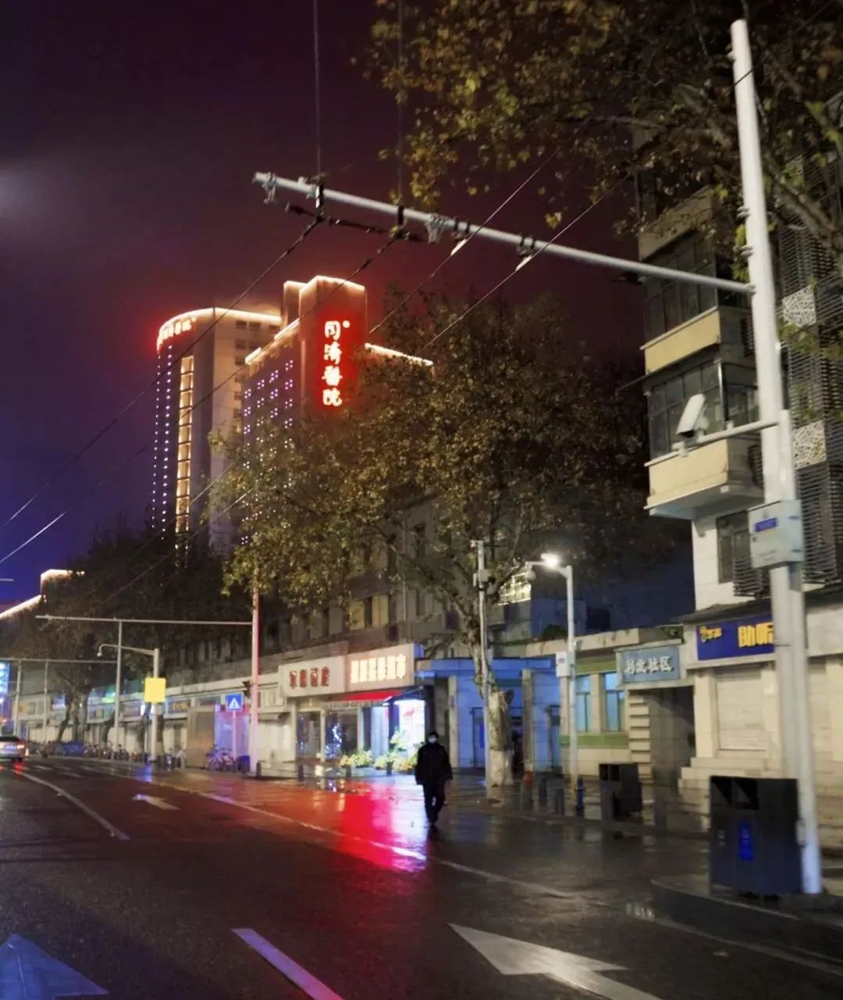
1月25日（大年初一）雨夜，武汉封城第三天，一家开车出来加油，到大年初二就出了加油限制
安娜的焦虑始于大年初二（1月26日），广西两岁的小孩确诊。我们的孩子还没到三岁。此前，我们口中说，不会传染小孩，给彼此心里安慰，谁都不敢确信。病毒终究打破了年龄的界限。
而孩子的词汇日益见长，在澳洲学会“大火”，在武汉学会了“咳嗽”和“口罩”。

1月26日，日经新闻报道了日本、美国两个国家准备从武汉接回本国公民；1月31日BBC报道英国撤侨航班抵达
谁走、谁留，
家中开始一场无休止的讨论
1月27日，英国启动了撤侨的计划，安娜打电话录入身份信息和联系方式。她说，我把你的信息写进去了，他们说家人可以一起走。我说，安娜，如果你们能走，我会留下来。我父母、姥姥，还在。年轻人最有可能扛过病毒，我要留下来，直到封锁结束。安娜说，我能理解。
家里开始一场无休止的讨论。
父亲说：“能走一个是一个，你留下来，能干什么？”我说：“我要蹭长假期。”母亲问：“你留下来到底有什么目的。”父亲答：“他不想被人说是逃兵。”
1月28日，德国派军机来的请求被拒。连着两天，安娜挂在嘴边的话是，法国人居然做到了。她如何也不能相信，自己的两个祖国落后了邻国。她终日在房间里打电话、发邮件，不放过一条小道消息。她远在欧洲的父母也已俨然生活在中国的时区。
1月31日，多家媒体援引德国外长Heiko Maas，报道德国将派包机从武汉撤侨
终于， 一家人看《别告诉她》时，坐在椅子上的安娜突然立起，我们等她的宣告。
“德国人要来了”，她说，“但是，我们要被强制隔离两周。”麻烦不止于此，离开的人要经过医学检查，有症状则不能走。没有说孩子和家眷可否同行。
英国撤侨飞机想在1月29号起飞，在机场被困两天，争论的焦点是孩子与家属问题。
在家中，母亲把大人的口罩改成儿童用，向内折，用线缝上。父亲找开车去机场的上报机构。安娜不情愿地签下了强制隔离的同意书。我为隔离期间准备儿童电影。孩子惊奇地发现，我们在为出行准备大量日常限额的饼干和电影。我说，这是中国新年，还没有过完。
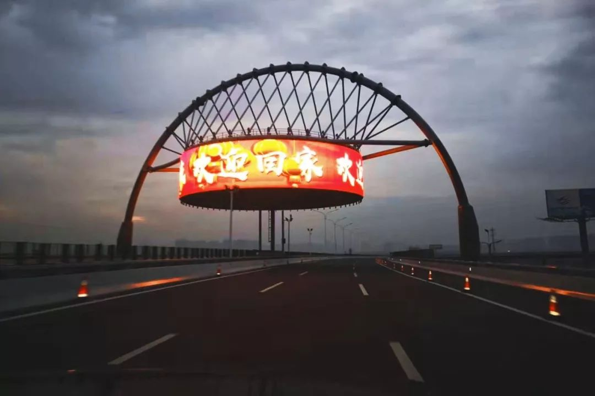
1月31日夜晚，晓宇全家前往机场
临行前没有人知道要在机场等多久，
我们也没有过多的告别
一月的最后一个夜晚，我们出发了。德国飞机抵达的时间临时提前一天，要求我们八点前到机场。
红绿灯时遇到飙车的摩托，一左一右，在空旷的大路上疾驰。手持名单的检查员在机场收费站，确认后再过军队的岗。机场门口的防爆检测变成了体温测试。出发大厅里有韩国人、印度人、孟加拉人、斯里兰卡人、土耳其人、德国人。
三名德国官员出现，穿橙色马甲。他们不知从哪里弄来一张中式的木桌，两把椅子。从包里，掏出德国国旗放在桌角，开始登记。
多亏英国人前面的拉锯，孩子、家属今天都可以上飞机。我们心中卸下了一块石，但是没有人知道要等多久。


1月31日深夜的武汉天河国际机场航站楼内
时间从八点到了十一点，孩子在机场跑乏，也不愿再戴口罩。我把他抱到车上睡觉，远离机场人群。他非让我抱他在前座睡。过了午夜，我的手臂麻了，也困得睡去，直到手机响起。
凌晨三点半，没有一点进展。机场冷飕飕的。起初防护严密的人群，这时候被击垮，他们摘下口罩和手套，敞开地吃零食和泡面。又这样过了两个小时，我们把行李登记，开始排队体检。
安娜怀中的孩子，穿着红色的袄子，像一团火，睁开眼睛说：“回家，爷爷奶奶家。”我们没人搭话。
我说，“这次不陪你和妈妈了，要是妈妈不让你看佩奇，你打电话给我。”他说，一起走。行事匆忙，我们都没顾得上给他打要分离的预防针。
我们没有过多的告别，两天没怎么休息，口干舌燥、头昏脑胀。他们消失在白色和黄色防护服的身影里。飞机第二天早上九点才起飞。
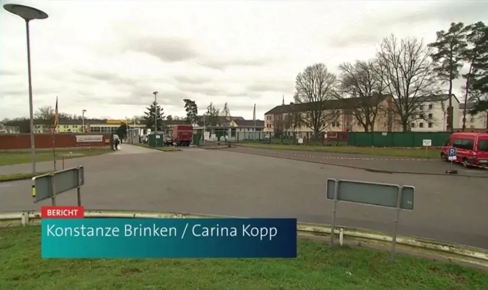
德国盖姆斯海姆军营隔离区外景
离开后的隔离：
每个家庭成员*压力大，孩子尤其煎熬 *
现在，我们保持每天的视频聊天，包括和夫人的父母，他们比我们更焦虑。
德国的隔离政策是：每天检查，如果在一百多名隔离的乘客里发现新的感染者，隔离时间就要重新计算，也就是重启两周。这给大家都造成了很大的心理压力。（撤侨航班上有2个确诊病例。）
营地是单间隔离，和酒店房间差不多，有公共活动的空间，可下楼在院子里活动。隔离区由德国红十字会的志愿者运行，亲友不能送包裹进去。
一开始的条件不能满足家庭的需要，比如孩子用的食品和餐具欠缺，吃的也较简单，后面做了调整。第二天，志愿者带来了孩子的玩具，饮食上也逐渐丰富。同行的隔离人里有瑜伽教练，组织了瑜伽课。现在大家心态上都轻松多了。
但对于孩子来说，他还是难以理解为什么不能出去，这对他是考验和煎熬。14天隔离期结束后的2月17日，他们又再次进行了检测，确认同批隔离的人都没有出现反应，已经回到家中。
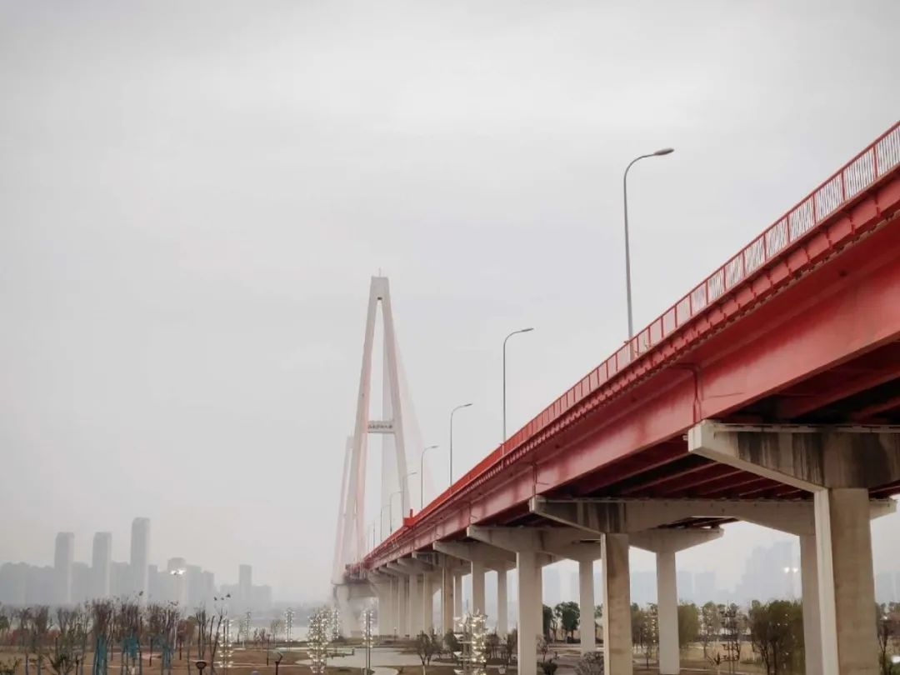
封城后的武汉 摄影：王朗Alex
“武断的温情”，
是我在这场危机中对家庭的理解
在武汉，我和父母、姥姥一起居住。现在，我们所在的小区已经完全封闭。
我的母亲说，我们生活在其中，反而没有那么的紧张。死亡离我们更近，认识的人确诊、疑似，但没人会在谈起死亡时，觉得它立刻要临到自己头上。我们紧张时，想的尽是家里谁感染了，朋友谁感染了，要怎么办。即便感染，想到的也是：坏了，亲人和朋友要怎么办，接触的那些人呢。
武汉人没有特别的信息渠道。我们和全国网友一样，从媒体和网络获得一手信息，同时依靠亲友的微信群传播。
我们和所有人一样，读到个体故事，但在家人面前从来不提。不是否认那些绝望的经历，而是它们离我们近。

2019年3月 哥伦比亚考察途中
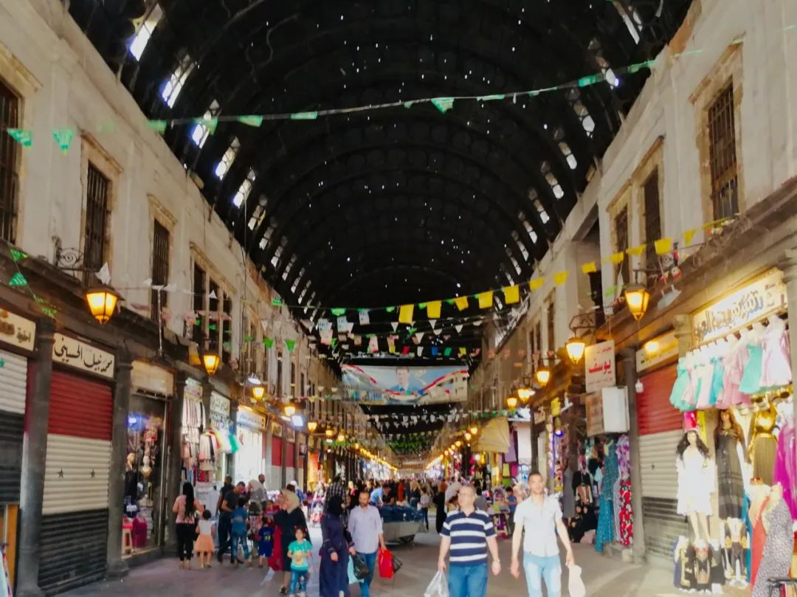
2019年5月 叙利亚考察途中
出于研究的需要，我时常去冲突或人道主义危机地区。2019年去了委内瑞拉和叙利亚，亲眼目睹了很多家庭的离散。从客观上说，我们这场分离不过是一场小波澜，没有生离死别。甚至可以说，有撤离的选择就是奢侈的。
但它仍然给家庭带来不小的冲击。我们一直在纠结的问题是：能出去一个就出去，还是优先保证家人在一起？保全的意义，到底是家人共克时艰，还是生命上的延续？往最坏的情景说，一家人集体赴难，家庭就没了。但要是一人幸存，孤家寡人，那意义又在哪里？
我们最终的共识是：孩子能走就走。
当然，这个决定唯一就是没有征求孩子的意见。即便他的年龄大一些，能够理解处境，如果不想走，我们会接受他的意见吗？恐怕也不会。
家庭的决策可能是温情的，但也是武断的。“武断的温情”，就是我通过这场危机，对家庭的理解。

讲述者
Fred
家庭成员
妻子Vikcy（武汉人）儿子1岁
岳父母武汉人
现状
Fred一家三口、岳父母两人
分别在武汉家中自我隔离
我和我太太Vicky是2015年在武汉认识的，她是武汉人，父母和亲戚都在武汉，去年我们刚迎来了自己宝宝的出生。
提前闭店，给员工发口罩
我在武汉生活了10年，和我太太在武汉最美的一条街——黎黄陂路上经营着三家店，一家咖啡店，一家服装店和一个设计工作室。
我知道新型肺炎的消息是在去年12月31日，网上开始流传华南海鲜市场的图片，当我听到的解释是“不明原因”，我就知道情况不妙。
近年来的病毒感染频发，像埃博拉病毒、H1N1流感爆发的速度都非常快，我马上给我的员工每人发了口罩。有几个员工还跟我开玩笑，“Fred，现在戴口罩也太夸张了。”
1月20日，我再三考虑下，决定提前关闭所有门店。三家门店每天都有不少的客流量，万一有员工感染，后果很严重，我不敢冒这个风险。

Vicky和宝宝的合照
我劝太太带儿子走，自己留下：
哪怕以外国人的面孔站出来鼓励大家也好
1月23日，武汉封城，是我预料之中的措施。事实上，我们家在封城前两天就已经主动自我隔离了，我跟我太太的爸妈解释，还特意嘱咐他们不要出门乱跑。
1月24日，我收到法国领事馆发来的邮件，通知我们法国政府将安排撤侨回法国，让法国公民按照情况填写个人信息。我当时心里特别焦虑，但还是很镇定地对太太说，“我希望你和Gaspard（儿子）走，我留下，这里需要我，你好好考虑一下，晚一点告诉我。”
24日是武汉市封锁的第二天，医护资源紧张，国际医院里的法国医生也建议大家撤离，他们没有办法保证法国人在这里能接受治疗。
我们最担心的就是小孩，我的孩子刚一岁，撤侨能保证太太和孩子，万一出了状况，一定可以接受治疗。
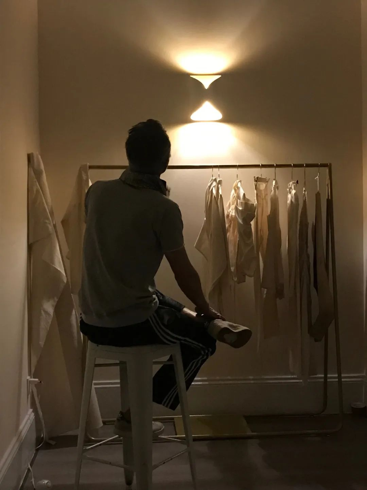
Fred在工作室
对于我来说，我早已经是一个武汉人，我没有想过离开，我也无法离开。万一家人有状况，店里、员工，甚至是去医院帮忙，哪怕仅仅是用外国人的面孔站出来鼓励大家。
我太太内心当时是很矛盾的，她知道我一旦决定就很难改变，一方面如果带儿子走了，我一个人在武汉，她完全放心不下我；但如果全家留下，一岁的儿子不幸感染，获得救治的机会有多少？
思前想后，她决定和我一起留下来。我们已在家隔离的这些天，都没有出现任何症状，那就一家人一起留下。
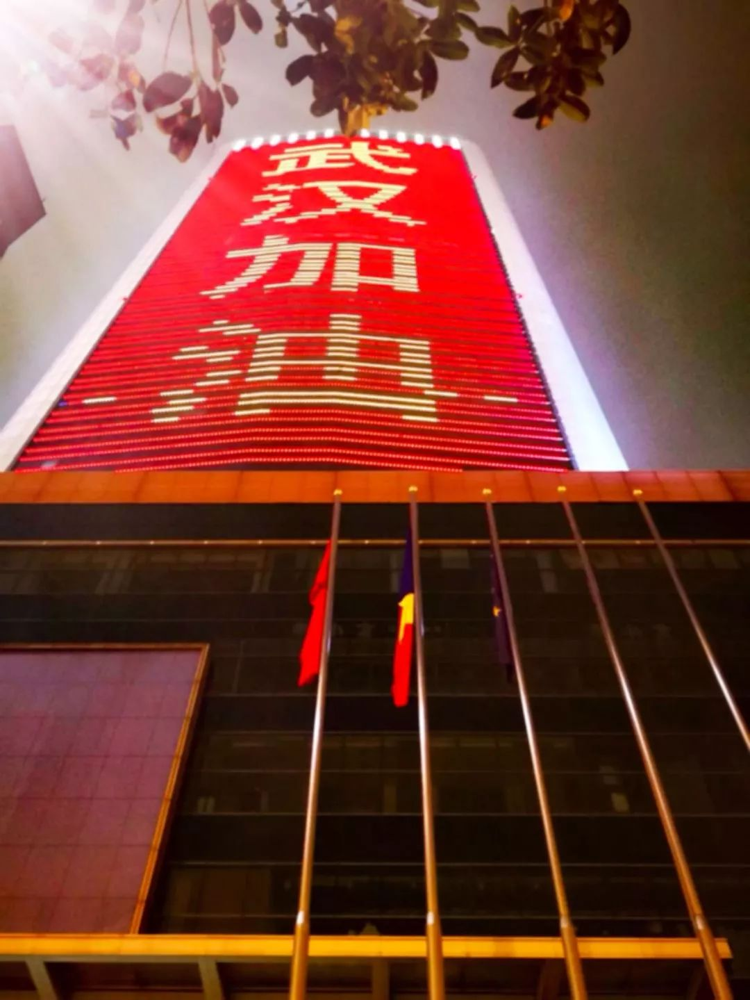
2月8日武汉领事馆门前，三面旗帜分别是中国、法国以及欧盟
我们为何最终放弃四次撤侨？
法国的第二次撤侨是在第一次撤离的第二天，我们得到消息，飞机可以带法国人和部分欧洲其他国家人回去。我又有点动摇，问Vicky：“要不这次走吧？”但是她看到新闻上说，中央已经派人来接管了，各地的物资也都开始支援武汉，她说这是一个好消息。
第三次撤离是2月1日，英国安排的飞机抵达，法国领事馆组织了200多人从武汉撤离，但是我们已经坚定要留下了。不知道为什么，我有很强烈的感觉：我们在家肯定是安全的。
最近一次是2月21日，法国再次撤侨，60多位法国和欧盟其他国家的侨民，被送回欧洲。

部分法国撤侨侨民被安置在南部卡利特鲁埃镇接受14天隔离，该地是南法著名的旅游度假地
我听说撤侨的法国人，有一部分是被安排在南法的度假酒店隔离，还有的是被安排在消防学校，有专业的医护人员和警卫人员监测，要隔离14天才能离开，幸运的是这批回到法国的人中没有人被感染。
我有几个外国朋友也决定留下来，大家都属于自我在家隔离，跟其他中国人一样，互相在微信群里交换信息，为彼此打气。
比较惨的是我的一个法国朋友，被困在国外，航班取消，无法回武汉，也不方便回法国。我就用微信联系他，多跟他分享一些疫情的最新情况。

Fred家窗外的武汉街景
在武汉的自我隔离：
我学会了做热干面
我们社区没有安排物资分配，从隔离到现在，我们只出门采购了三次。我负责骑电动车去附近的大超市把一周的物资运回来。
我每天都在关注法国新闻和新华社的app，法国国内现在也开始恐慌，政府开通了专线帮助人们解答新型肺炎的各种问题，有些人会问，“我吃了中国菜会被感染吗？”“从中国收到的包裹，可以安全打开吗？”我觉得挺可笑的，反而在武汉，我感到很踏实。
我是服装设计师，每天我都还在坚持工作：戴好口罩、手套，骑自行车去工作室做设计，但都是一个人，不再跟他人接触了。（截至发稿时，武汉已经施行小区全封闭化管理，全家也不再出门了。）
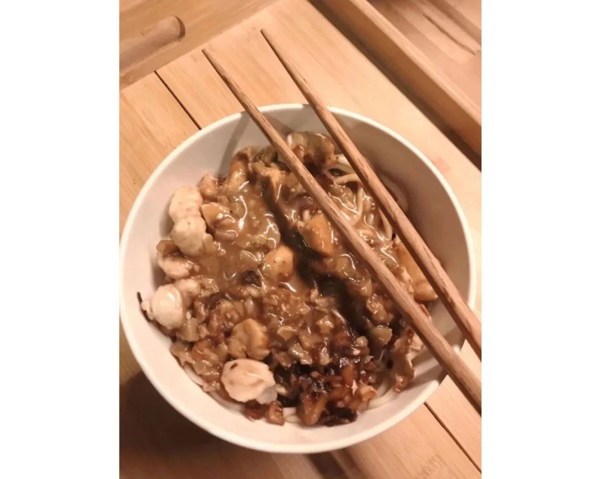
Fred做的热干面
我的太太除了做设计、负责店里大小事务，她还是一名音乐老师，她在家照顾宝宝、做家务之外，偶尔会在线教钢琴课。晚上我们通常一起吃晚餐，再一起看一部电影。
我还利用了这段空闲的时间，学会做了武汉的热干面。

居家工作和陪伴小孩，成为了Fred隔离期间的日常
家人健康之外，
最担心疫情之后店铺的经营
隔离了一个月，最高兴的是我一岁的儿子，以前我们去上班，孩子白天是给我的岳父母照顾，晚上再接回来。现在他特别开心，我能有这么多的时间陪他玩，给他讲故事，哄他睡觉，父子感情也变得更好了。
目前我们全家人没有一个人生病。我们没吃什么预防的药，就是按照平时习惯补充维生素之类的保健品，坚持早晚监测体温。Vicky的爸妈隔离在另一个小区，身体也很健康，这已经是最大的幸运了。
最担心我的是我在法国的家人，我每天在微信上跟我妈汇报，晚餐吃了什么，早晚的体温等等。我妈妈之前来过武汉，她在新闻上看到曾经走过的街道，现在空无一人，感觉很伤心，每天为武汉和我祈祷。

Fred工作室一角
这次疫情对我们的店铺也有很大的影响，我现在更担心的是生意，三家店闭店一个多月的损失还是很大的。
不光我们，所有店都关闭了，不知道什么时候可以再恢复营业。这是所有武汉店家最关心的问题。不过我会耐心等着政府的恢复营业通知，在此之前，我要做的就是保证家人的安全和健康。

在疫情期间画的手绘图
正如晓宇所说的，“武断的温情”，可能是一个家庭，在这场危机中能做出的最好的决定。
愿疫情结束后，每个分离的家庭，早日相聚。
部分图片由受访者提供

▼

原文链接 备份链接 以下文章来源于世风 ，作者吕晓宇 【疫情之下】是苍衣社开设的非虚构故事专栏，记录在新型冠状病毒疫情蔓延时，普通中国人的抗疫报告。 大家好，我是脸叔。 随着新冠肺炎的爆发，湖北地区的居民工作和生活都受到很大的影响。 …
原文链接 备份链接 自武汉爆发新型冠状病毒疫情之后，多个国家组织起撤侨工作。对于拥有跨国婚姻的人而言，此刻是与家人一同撤离，还是坚守在国内，成为十分痛苦、但又不得不做出的决定。单读作者晓宇就是其中的一员，他的妻子、拥有英德双国籍的安娜， …
原文链接 备份链接 岛语 非常时期，武汉成了全国人民挂念、祈福的城市。封城后，武汉人民的真实生活是什么样？ 武汉在发生哪些变化？ 正和岛自1月26日起特别推出“叶青专栏”。叶青是一位定居武汉40年的市民，也是一名学者和官员。在过往多期的专 …
原文链接 备份链接 文/六筒 李岩半年前刚去过武汉，和家人去旅游，主要想看看黄鹤楼。那还是夏天，热气蒸得人头上冒烟。高温挡不住蜂拥的游客，摩肩接踵，拥塞的车辆在大道上艰难挪动。“真是个大都市”，她想。 李岩是河北医科大学第二医院呼吸与危重 …
原文链接 备份链接 “ - 疫 情 之 下 - 武汉的疫情就像一簇紧簇的乌云，笼罩在每一个人的心头。但所幸，在这个受伤的城市中，在每台志愿者车里，在疲于奔波的路上，总有那么一群可爱的人，温暖着我们前线医护工作者的心。 ” 1 2020年 …